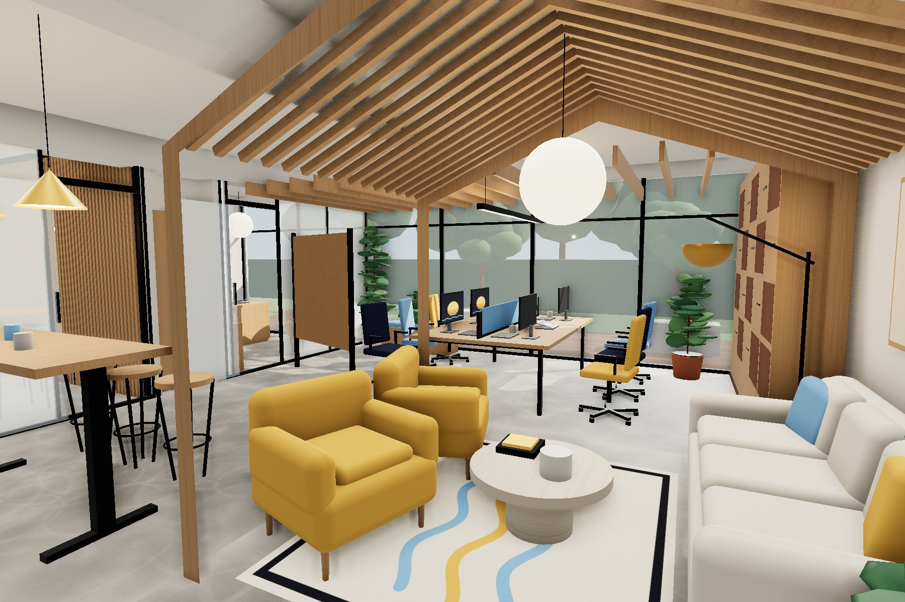
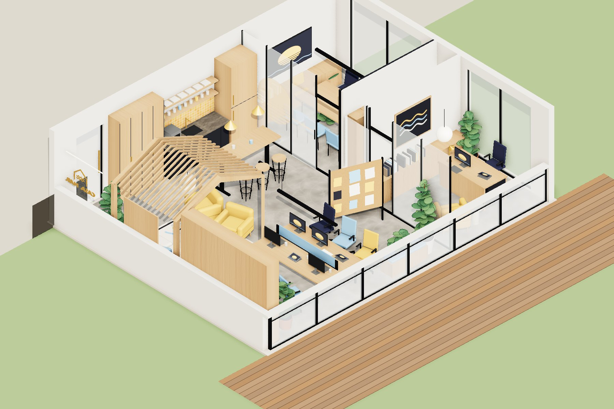
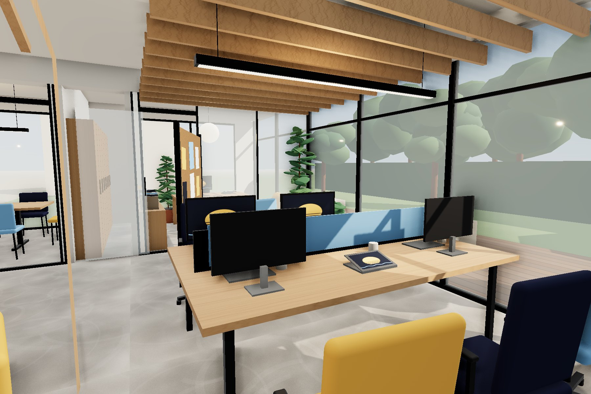
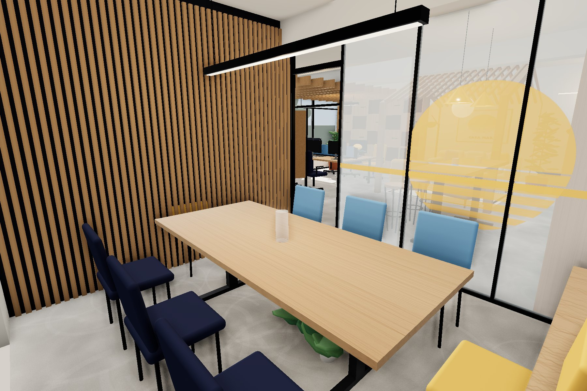
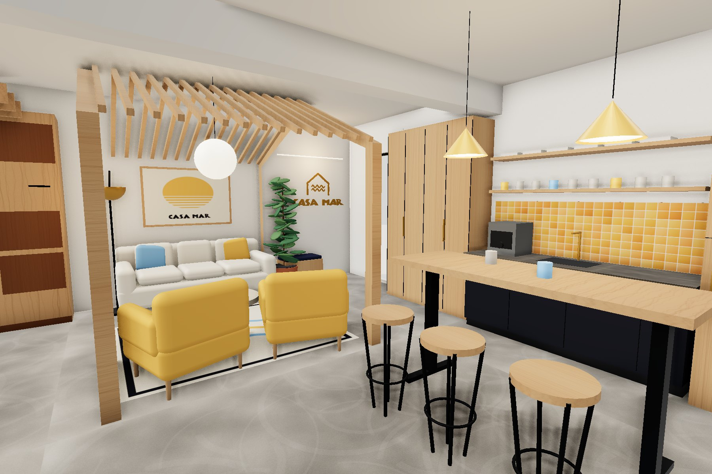
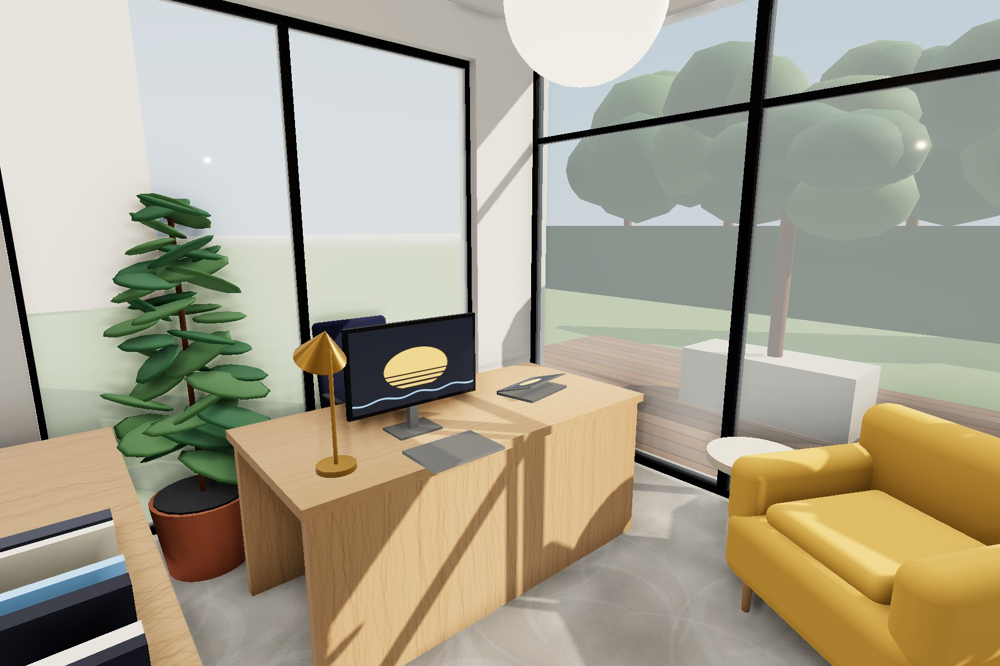
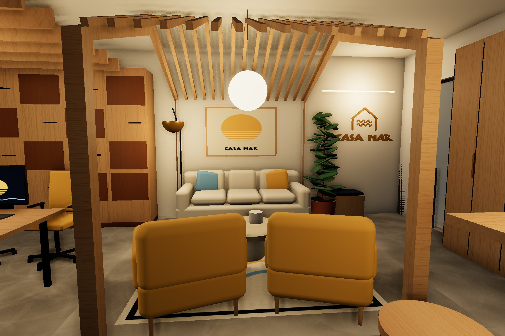
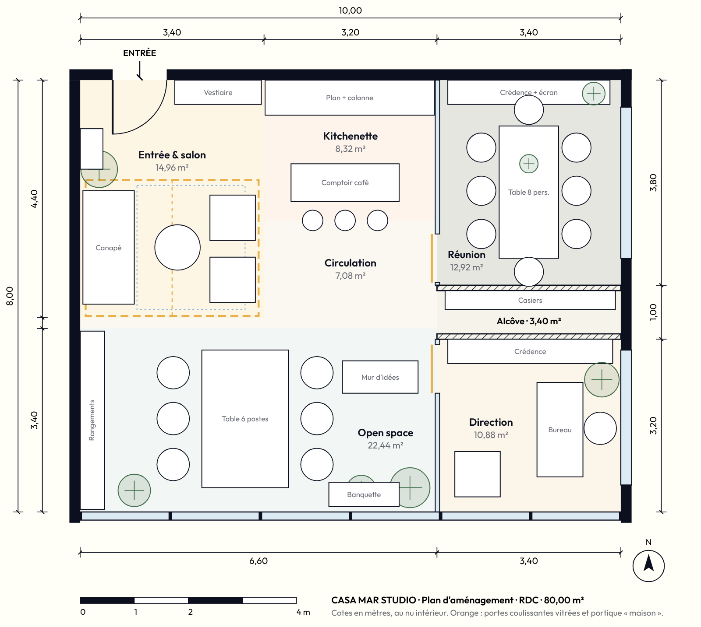

Dossier d'architecture intérieure · APS · nov. 2026
Les locaux de l'agence Casa Mar : 80 m² traversants, une grande façade vitrée plein sud sur jardin, et au milieu une maison en chêne qui sert de salon. Un lieu de travail qui ressemble à la marque : chaleureux, solaire, un peu vacances.

Trois idées directrices, tirées de l'identité Casa Mar : une maison, la mer, la nuit.
À l'entrée, un portique en chêne massif reprend le profil du logo. Ses liteaux de toiture dessinent des ombres rayées sur le salon. On n'arrive pas dans un hall : on arrive chez quelqu'un.
Le plateau s'ouvre plein sud sur un jardin planté d'oliviers. Toutes les cloisons sont vitrées et la lumière traverse jusqu'à la cuisine. Les vagues du logo reviennent sur le tapis, les affiches et la vitrophanie.
Le soir, l'éclairage indirect prend le relais : suspensions linéaires, globes opalins, cônes orange au-dessus du comptoir et rampe lumineuse sous le logo. Teste avec le curseur d'heure de la visite.
Fais tourner la maquette, choisis une vue, ou passe en mode visite pour te promener à hauteur d'yeux (glisser pour regarder, flèches ou ZQSD pour avancer).
Rendus calculés à partir de la même maquette : soleil de fin d'après-midi, ombres portées et occlusion ambiante. Clique pour agrandir.







Plan généré à partir de la maquette 3D : les cotes, les surfaces et le mobilier correspondent exactement aux vues.
Le plan se dessine dès que la maquette est chargée.
| Espace | Dimensions | Surface |
|---|---|---|
| Total |
Surfaces mesurées au nu intérieur des murs de façade, cloisons comprises. Hauteur sous plafond 3,00 m, sous poutres 2,65 m. Circulations principales ≥ 1,20 m, passage PMR jusqu'au bureau de direction et à la salle de réunion.
Bois naturel, béton ciré et métal noir pour la base ; l'orange, le bleu et le marine de la charte Casa Mar pour les accents.